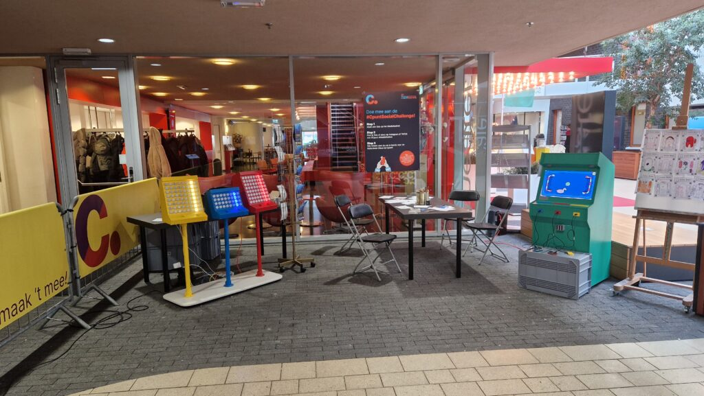

Cpunt Mediafestival 2025
We werden ingezet als rustmoment, maar werden het drukste plekje van het mediafestival.

In samenwerking met Cpunt waren we onderdeel van het Mediafestival in Hoofddorp. Het Mediafestival is een jaarlijks terugkerend evenement waar media, creativiteit en onderwijs samenkomen. Leerlingen nemen de hele dag deel aan uiteenlopende workshops waarin ze op hun eigen manier met beeld, geluid en technologie bezig zijn. Onze workshop drumrobots was daar onderdeel van.
Tussen de inhoudelijke workshops door konden de leerlingen bij ons even ontspannen en hun energie kwijt. Ze gingen enthousiast aan de slag met de SideQuest Rave: vrij spelen, geluid maken en samen muziek bouwen. Anderen daagden vrienden uit voor een competitief spel op de arcademachine.
Een van de hoogtepunten was het grootste levende avatarbord dat we tot nu toe hebben gemaakt. Alle leerlingen konden hun zelfgetekende avatar op de muur plakken. Zo ontstond een kleurrijk portret van de dag, geheel in de stijl van het thema. Een groot succes, en precies het soort ervaring dat laat zien waarom we graag met dit soort evenementen meedenken.